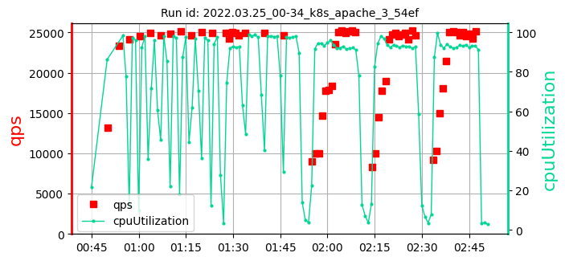

Please zoom out to see the full table.
k8s_apache_3_ samples: 13
date: 2022-06-22 15:05:57.173817
| | |
max:
627
min:
310
mean:
442
|
max:
26815
min:
24550
mean:
25515
|
max:
99.18
min:
95.98
mean:
97.81
|
max:
90
min:
21
mean:
40
|
| 1. test id: 2022.03.15_23-46_k8s_apache_3_4b98 [raw data] | run settings: cpu=70 pods=6 treads=70 sc_min=14 warmup=130 | |
Duration s | qps | CPU % | Err |
| | | [372, 388, 405]
389 | [25753, 25616, 25286]
25551 | [98.97, 99.18, 99.16]
99.10 | 26 |
| 2. test id: 2022.03.16_20-42_k8s_apache_3_4b98 [raw data] | run settings: cpu=70 pods=6 treads=70 sc_min=14 warmup=130 | |
Duration s | qps | CPU % | Err |
| | | [402, 421, 627]
483 | [26121, 26686, 26815]
26541 | [97.43, 97.35, 98.11]
97.63 | 37 |
| 3. test id: 2022.03.22_19-33_k8s_apache_3_54ef [raw data] | run settings: cpu=70 pods=6 treads=70 sc_min=14 warmup=130 | |
Duration s | qps | CPU % | Err |
 | | | [326, 341, 521]
396 | [26112, 25709, 25735]
25852 | [97.38, 97.46, 97.85]
97.56 | 42 |
| 4. test id: 2022.03.23_03-27_k8s_apache_3_54ef [raw data] | run settings: cpu=70 pods=6 treads=70 sc_min=14 warmup=130 | |
Duration s | qps | CPU % | Err |
| |  | [450, 357, 497]
435 | [25767, 25782, 25960]
25837 | [96.6, 96.55, 96.64]
96.59 | 32 |
| 5. test id: 2022.03.24_01-00_k8s_apache_3_54ef [raw data] | run settings: cpu=70 pods=6 treads=70 sc_min=14 warmup=130 | |
Duration s | qps | CPU % | Err |
|  | | [474, 498, 394]
455 | [26003, 25948, 25760]
25904 | [98.04, 98.21, 98.09]
98.11 | 41 |
| 6. test id: 2022.03.25_00-34_k8s_apache_3_54ef [raw data] | run settings: cpu=70 pods=6 treads=70 sc_min=14 warmup=130 | |
Duration s | qps | CPU % | Err |
|  | | [522, 362, 310]
398 | [24906, 24917, 24677]
24833 | [98.61, 98.03, 97.69]
98.11 | 46 |
| 7. test id: 2022.03.25_22-59_k8s_apache_3_54ef [raw data] | run settings: cpu=70 pods=6 treads=70 sc_min=14 warmup=130 | |
Duration s | qps | CPU % | Err |
| | | [445, 525, 358]
442 | [25556, 25534, 25849]
25646 | [98.78, 98.35, 98.74]
98.63 | 51 |
| 8. test id: 2022.03.28_02-52_k8s_apache_3_0c47 [raw data] | run settings: cpu=70 pods=6 treads=70 sc_min=14 warmup=130 | |
Duration s | qps | CPU % | Err |
| | | [400, 547, 388]
445 | [25687, 25695, 25325]
25569 | [97.04, 97.98, 97.68]
97.57 | 26 |
| 9. test id: 2022.03.29_23-13_k8s_apache_3_41cf [raw data] | run settings: cpu=70 pods=6 treads=70 sc_min=14 warmup=130 | |
Duration s | qps | CPU % | Err |
| | | [467, 508, 399]
458 | [24620, 24732, 24550]
24634 | [97.08, 96.67, 96.5]
96.75 | 21 |
| 10. test id: 2022.03.31_02-22_k8s_apache_3_41cf [raw data] | run settings: cpu=70 pods=6 treads=70 sc_min=14 warmup=130 | |
Duration s | qps | CPU % | Err |
| | | [379, 547, 469]
465 | [25039, 25524, 25251]
25272 | [99.13, 99.01, 99.01]
99.05 | 90 |
| 11. test id: 2022.04.05_22-42_k8s_apache_3_41cf [raw data] | run settings: cpu=70 pods=6 treads=70 sc_min=14 warmup=130 | |
Duration s | qps | CPU % | Err |
| | | [443, 459, 417]
439 | [25331, 25158, 25465]
25318 | [98.56, 98.74, 98.5]
98.60 | 33 |
| 12. test id: 2022.04.16_19-05_k8s_apache_3_41cf [raw data] | run settings: cpu=70 pods=6 treads=70 sc_min=14 warmup=130 | |
Duration s | qps | CPU % | Err |
| | | [386, 430, 510]
442 | [25414, 25606, 25557]
25526 | [97.41, 97.29, 97.27]
97.32 | 27 |
| 13. test id: 2022.04.17_22-30_k8s_apache_3_41cf [raw data] | run settings: cpu=70 pods=6 treads=70 sc_min=14 warmup=130 | |
Duration s | qps | CPU % | Err |
| | | [419, 591, 488]
500 | [25252, 25402, 24992]
25215 | [95.98, 96.83, 96.82]
96.55 | 48 |
k8s_apache_3_ samples: 13
date: 2022-06-22 15:05:57.173817
| | |
max:
627
min:
310
mean:
442
|
max:
26815
min:
24550
mean:
25515
|
max:
99.18
min:
95.98
mean:
97.81
|
max:
90
min:
21
mean:
40
|